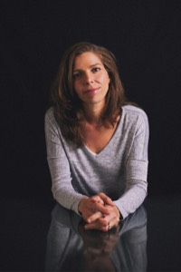

Chicken & Egg Pictures
15 people whose festival biography mentions Chicken & Egg Pictures. A mention can mean a job, a past job, a grant, a broadcast or an award: read the bio for which.

Sky SitneyFestival team · 7 editions, 2015–2023 Erika CohnFilmmaker, panelist · 3 editions, 2020–2024
Erika CohnFilmmaker, panelist · 3 editions, 2020–2024 Yoruba RichenFilmmaker, panelist · 3 editions, 2023–2026Newmark Graduate School of Journalism at CUNY
Yoruba RichenFilmmaker, panelist · 3 editions, 2023–2026Newmark Graduate School of Journalism at CUNY- Ramona DiazFilmmaker, panelist · 2 editions, 2019–2020

- Judith HelfandPanelist, workshop leader, festival team · 2 editions, 2021–2022Chicken & Egg Pictures


 Violet Du FengPanelist · 2021
Violet Du FengPanelist · 2021 Kristi JacobsonFilmmaker, panelist · 2016
Kristi JacobsonFilmmaker, panelist · 2016 Rajal PitrodaPanelist · 2024
Rajal PitrodaPanelist · 2024 Marjan SafiniaPanelist · 2021
Marjan SafiniaPanelist · 2021